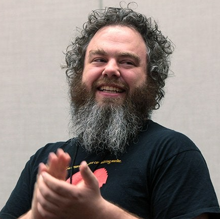

Patrick James Rothfuss (Madison, 6 de junio de 1973) es un
escritor
estadounidense de fantasía y profesor adjunto de literatura y filología inglesa de la Universidad de
Wisconsin. Es el autor de la serie Crónica del asesino de reyes, que fue rechazada por varias editoriales
antes de que el primer libro de la serie El nombre del viento fuese publicado en el año 2007. Obtuvo muy
buenas críticas y se convirtió en un éxito de ventas.
Personajes destacables de la obra:
- Kvothe
- Denna
- Abenthy
- Bast
- Ambrose
- Felurian
- Cronista
- Los maestros:
- Los Chandrian:
- Alaxel/Haliax
- Cyphus
- Stercus
- Ferule/Cinder
- Usnea
- Dalcenti
- Alenta
Suscribete para recibir una notificación cuando Las Puertas de Piedra salga